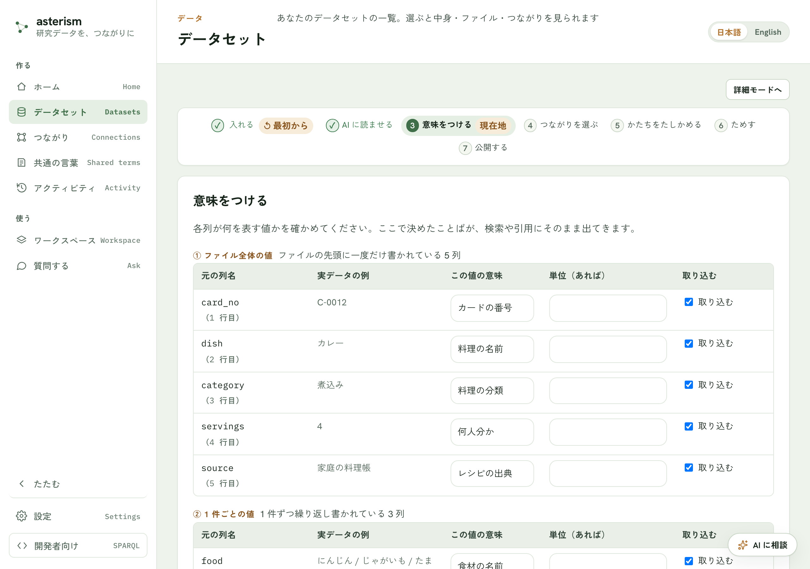
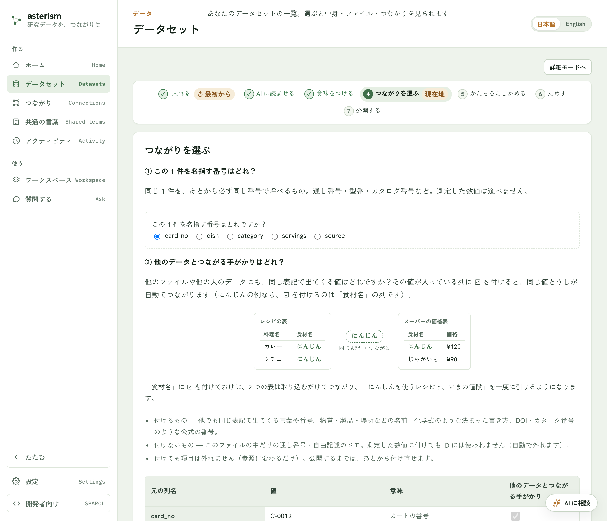
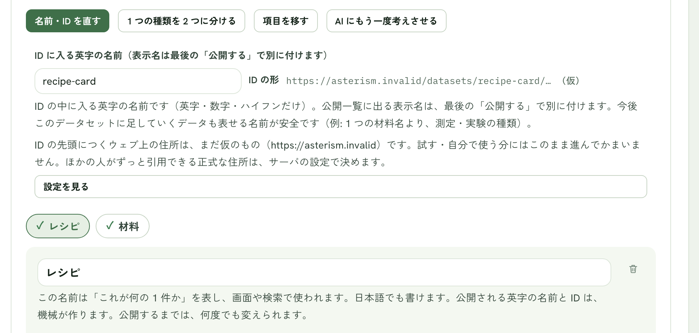
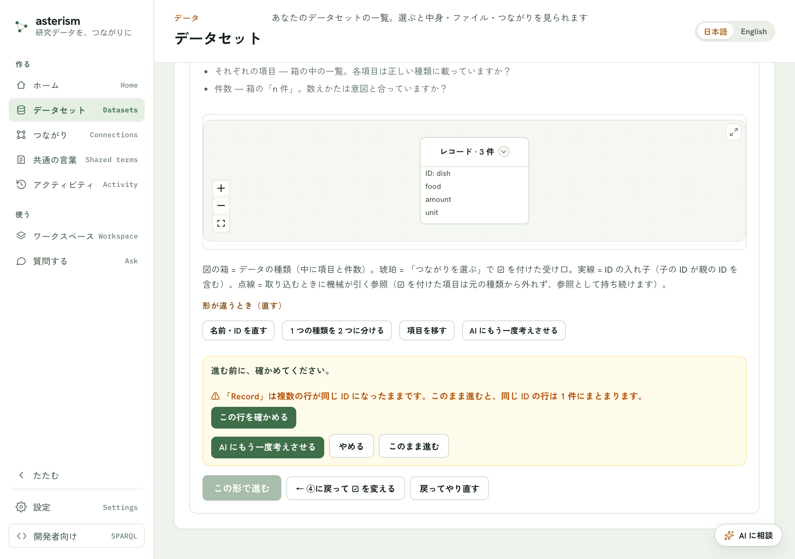
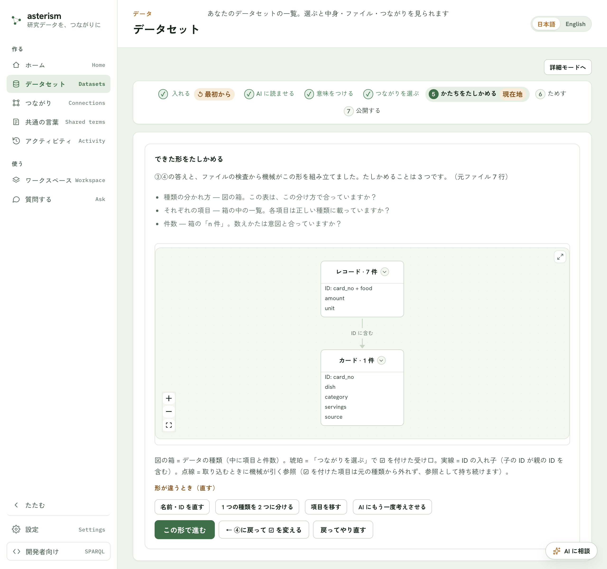
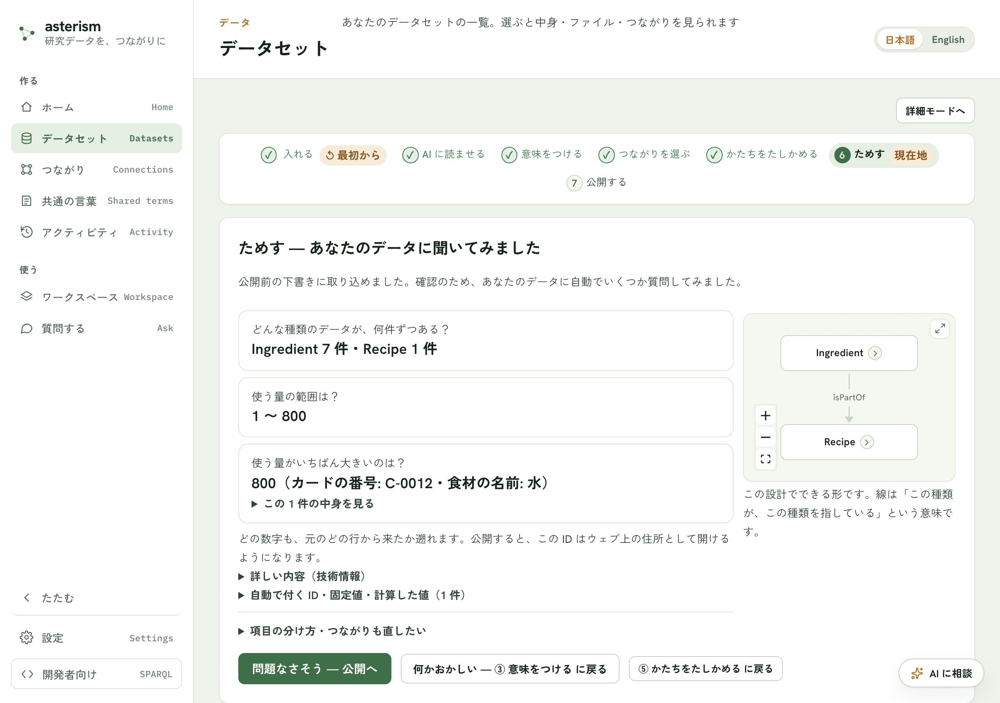
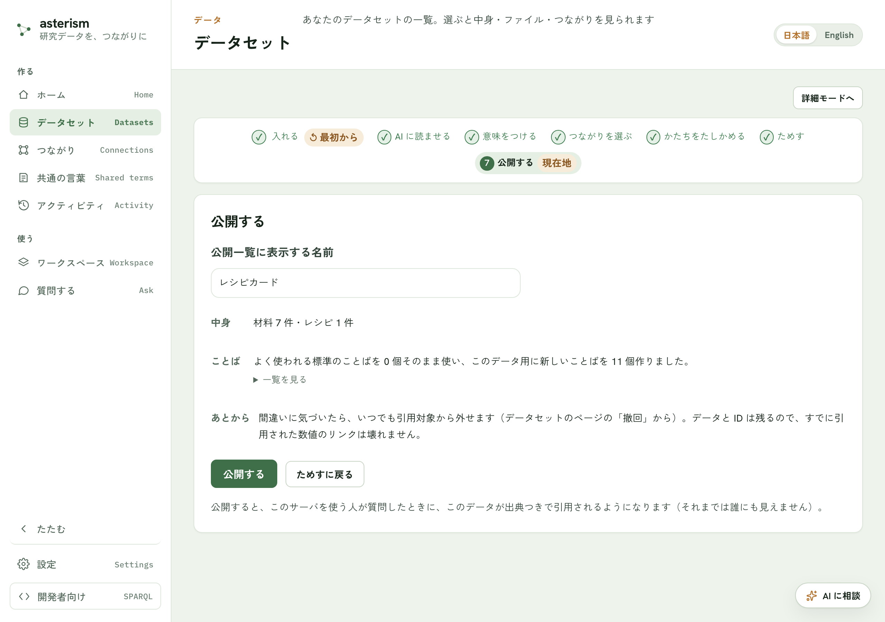

はじめる — かんたんモードの 7 ステップ v0.9.0 (2026-07-23) で追加
Asterism の「かんたんモード」は、研究データを取り込んで公開するまでを7 ステップの順番に進めるウィザードです。各ステップで確かめること・押すボタンをまとめます。
1. 入れる
測定データや文書のファイルをドラッグ＆ドロップするか、クリックして選びます。手元にファイルが無いときは「まずサンプルデータで試す」ボタンで最後まで試せます。置いたら読み取りが始まり、公開するまで内容は誰にも見えません。
2. AI に読ませる
「読み取りの確認」画面で、AI がファイルをどう読み取ったかを確認します。表のはじまる前に条件や見出しらしい行があった場合など、あなたしか知らないことを聞かれることがあります。列の分けかたや文字化けの直しもここでできます。内容を確かめたら「この内容で進む」ボタンで次へ。ファイルを変えたいときは「ファイルを選び直す」ボタンです。
続いて AI がデータを読む処理が走ります（「AI がデータを読んでいます」の表示）。他の画面を見に行っても続きますが、このタブは閉じないでください。読み取りに失敗したときは「もう一度 AI に読ませる」ボタンでやり直すか、「戻ってやり直す」ボタンで前の画面に戻れます。
3. 意味をつける
各列が何を表す値かを確かめます。ここで決めたことばが、検索や引用にそのまま出てきます。下書きは AI が書きますが、表の中は直接書き換えられます（ここでAI は使いません）。
一覧は 2 つに分かれています。
- 「① ファイル全体の値」— ファイルの先頭に一度だけ書かれている値です（装置ファイルの測定条件など）
- 「② 1 件ごとの値」— 1 件ずつ繰り返し書かれている値です（表の各行に並んでいる値）
各行で、元の列名・実データの例を見ながら、その値の意味と単位を確かめます。使わない列は、右端の「取り込む」のチェックを外してください。外したことはデータセットに記録され、あとで見直しを開いたときも外れたままです。空欄のまま進んでも大丈夫です（その列は元の列名のまま検索できます）。
AI が意味を読み取れなかった列も、同じ表の中に、意味が空欄のまま並びます（別の表には分かれません）。空欄があるときは、表の上にその件数が出て、「空欄の意味を AI に相談して埋める」ボタンで相談チャットに頼めます（文面が入った状態で開くだけなので、送るかどうかはあなたが決めます）。
他のデータとつながる手がかり — 他のファイルや他の人のデータにも、同じ表記で出てくる値はどれですか？ その値が入っている列に ☑ を付けると、同じ値どうしが自動でつながります（食材名「にんじん」の例なら、☑ を付けるのは「食材名」の列です）。付けておけば、取り込むだけで「にんじんを使うレシピと、いまの値段」を一度に引けるようになります。「例を見る」を開くと、レシピの表とスーパーの価格表の図で確かめられます。
- 付けるもの — 他でも同じ表記で出てくる言葉や番号。物質・製品・場所などの名前、化学式のような決まった書き方、DOI・カタログ番号のような公式の番号
- 付けないもの — このファイルの中だけの通し番号・自由記述のメモ。測定した数値は選べません（「測定値は選べません」と出ます）
- 付けても項目は外れません（参照に変わるだけ）。公開するまでは、あとから付け直せます。「取り込む」を外した列には付けられません
既にある項目との当てはめ提案 — 列の意味を書くと、すでに「ことば」や公開済みのデータにある項目と同じものかもしれないとき、その行に「既にある「○○」と同じ項目」と提案が出ます。「同じ項目として結ぶ」ボタンで受けると、結んだことが記録されます（「結んであります」。「結ぶのをやめる」ボタンで外せます）。提案を受けても ☑ は付きません。値までつなぎたいときは、提案の横の「値でもつなぐ」ボタンを押します。どちらも、あなたが押したものだけが反映されます。機械が勝手に結ぶことはありません。意味の欄を書き換えると、前の意味への当てはめは外れます。ここに出るのは「項目」の提案だけです（「種類」の提案は 5. で出ます）。
- の「何かおかしい — ③ 意味をつける に戻る」ボタンから、公開前の下書きの
見直しとして開いたときは、「同じ項目として結ぶ」ボタンは出ません。代わりに「当てはめは「設計を見直してから」の作り直しで線になります」と 1 行だけ出ます。この画面で保存しても、項目の当てはめは線になりません。結びたいときは、「設計を見直してから」で作り直してください。「値でもつなぐ」ボタンは、この画面でも保存すれば効きます。
確かめたら「この意味で進む」ボタンで次へ。読み取りの設定に戻りたいときは「読み方の設定に戻る」ボタンです。


4. 番号を選ぶ v0.31.0 (2026-08-31) で追加
ここで決めるのは、この 1 件を名指す番号です。「他のデータとつながる手がかり」の ☑ は、3. の画面で付けます（3. で付けた ☑ はそのまま使われます）。
この 1 件を名指す番号はどれですか？ — あとから必ず同じ番号で呼べるもの（通し番号・型番・カタログ番号など）を 1 つ選びます。選べるのは、ファイル全体で 1 つに決まる値（表の前に書かれた値）だけで、行ごとに変わる測定した数値は選べません。番号に選んだ列は、3. の画面で「番号なので ☑ 済み」と表示され、☑ を外せなくなります。
候補が 2 つ未満のときは、この画面は畳まれます。
- 候補が 1 つだけ — 機械が決めます。ステップの名前の下に「番号は自動で決まりました」と薄く出て、そのまま 5. の形の組み立てに進みます
- 決められる候補が無い — 番号は仮置きになります。「番号は仮置き（⑤で確認）」と薄く出て、5. で確かめます


迷ったら「迷ったら AI に相談」ボタンで相談チャットが開きます（文面が入った状態で開くだけなので、送るかどうかはあなたが決めます）。番号を決めたら「えらび終えた — 形を組み立てる」ボタンで次へ。ここでの組み立ては機械の計算だけで、AI は使いません（数秒で終わります）。3. に戻りたいときは「← ③ 意味をつける に戻る」ボタンです。
自動で結ばれるのは、人が 3. で自分で付けた ☑ どうしだけです（名指す番号は、自動で結ぶ材料にはなりません）。結ばれたかどうかは「つながり」画面で確かめられ、要らなければ外せます。
5. かたちをたしかめる v0.31.0 (2026-08-31) で追加
「できた形をたしかめる」画面には、3. と 4. の答えとファイルの検査から機械が組み立てたデータの形が、図で表示されます。図の箱 = データの種類で、箱の1 行目にその種類の ID の作り方（ID: No のように）、続いて項目が並び、ラベルに件数が入っています。確かめることは 3 点です。
- 種類の分かれ方 — 図の箱。この表は、この分け方で合っていますか？
- それぞれの項目 — 箱の中の一覧。各項目は正しい種類に載っていますか？
- 件数 — 箱の「n 件」。数えかたは意図と合っていますか？
図の色と線の意味: 琥珀色の箱は 3. で ☑ を付けた「つながる受け口」、実線はID の入れ子（子の ID が親の ID を含む）、点線は取り込むときに機械が引く参照です（☑ を付けた項目は元の種類から外れず、参照として持ち続けます）。
既にある種類との当てはめ提案 — 図の種類の箱の下に、種類（項目ではなく）だけを対象に、「ことば」や公開済みのデータにすでにある種類と似ているとき、「既にある「○○」の一種にしますか」と提案が出ます。「一種にする」ボタンは、その種類の下位の種類として、「同じ種類として結ぶ」ボタンは、同じ種類として結びます。受けると「「○○」の一種にします（公開のときに線が引かれます）」のように表示され、「取り消す」ボタンで外せます。受けただけではここでは何も書き込まず、公開のときに種類どうしの線が引かれます（「ことば」でいつでも取り消せます）。提案を出すだけで、あなたが押すまでは何も変わりません。
前書きの無い、表だけのファイルでは「カード」の箱はありません — ファイル全体を表す値がそもそも無いためで、正常な形です。レコードと受け口だけの図になり、受け口への参照は各レコードから引かれます。
- で機械が仮の ID を置いたときは、箱の中に「（仮・機械の推定）」と書かれ、
図の下に ⚠ が出ます。そのままでも進めますが、違うときは ⚠ の横の「名前・ID を直す」ボタンで、その種類の ID を選び直せます。また、同じ ID で数える種類が 2 つあり、しかも同じ項目を持っているときも ⚠ が出ます。重複そのものが禁止なわけではありません— 同じものの写しなら要らない方を消す、別のものなら項目を分ければ ⚠ は消えます。迷ったら「重複を AI に相談」ボタンで具体的に聞けます。
ファイルが 2 つ以上あり、同じ意味の列（3. で付けた意味が同じ。意味を付けていなければ列名が同じ）に別々のファイルで ☑ を付けたときは、その受け口は1 つの種類にまとまりますv0.49.0 (2026-09-30) で追加— 図の箱は 1 つになり、各ファイルの種類から点線が引かれます。同じ値は、どのファイルから来ても同じ 1 件です（例: 測定の表と試料の表の両方にある組成）。図の下に、まとめたことと、両方のファイルに出てくる値の数が出ます。違うものだったときは、その横の「別々の種類にする」ボタンで分けられます。同じファイルの中の 2 列（出発地と到着地など）は、同じ意味でもまとめません。
3 点が合っていれば「この形で進む」ボタンで次へ。それで終わりです。3. の ☑や番号を変えたくなったら「← 戻って ☑ と番号を変える」ボタンで戻れます（4. が畳まれているときは 3. に、出ているときは 4. に戻ります。戻って変えると、形は組み立て直しになります）。
形が違うときは、「形が違うとき（直す）」の下の 4 つから直しかたを選びます。
- 「名前・ID を直す」ボタン — 種類ごとの名前と ID の作り方を確かめて直します。図の箱をクリックしても、その種類の直しが開きます。種類の名前は日本語でも書けますv0.47.0 (2026-09-29) で追加— これが何の 1 件かを表す名前で、画面や検索で使われます。公開される英字の名前と ID は、この名前とは別に機械が作るので、公開するまでは何度でも書き直せます
- 「1 つの種類を 2 つに分ける」ボタン — 1 行に別々のもの（例: 測定の記録と、測定した対象）が混ざっているとき。「＋ 同じ ID で種類を足す」ボタンで、いまの ID をそのまま使う種類をもう 1 つ足し、名前を付けて「足す」ボタンを押すと種類が増えます。増やした種類に載せる項目は「項目を移す」で移します
- 「項目を移す」ボタン — どの種類が、どの項目を持つかの一覧が開きます。右の「載せる種類」を選び直すと、その項目を持つ種類が変わり、図の箱も同時に変わります。どの値を ID にするか（☑ と番号）は 3.・4. で決めたとおりです — 変えたいときは「← 戻って ☑ と番号を変える」ボタンを使ってください
- 「AI にもう一度考えさせる」ボタン — いまの設計を渡して、注文を付けたところだけ AI に直させます。この画面でやった編集（種類の名前・ID の作り方・削除・切り出し）は残ります。データセットの名前（ID に使われる英字名）は「名前・ID を直す」の中で変えられます


逆に、組み上がった形が行ごとの種類だけで「ファイル全体で 1 件」が無いときは、⚠ と「＋ ファイル全体の種類を作る」ボタンが出ます。押すと、ファイルに一度だけ書かれている値（カタログ番号や測定条件など）が、まとまった 1 件に分かれます。
わからなければ、いったんそのまま進んで構いません。公開するまでは、この画面に戻って何度でも直せます（種類を足す・消す・項目を移す）。動かせなくなるのは、公開して ID を配ったあとだけです。相談したいときは右下の「AI に相談」ボタンで相談チャットが開きます。前の画面に戻りたいときは「戻ってやり直す」ボタンです。
「この形で進む」ボタンを押したとき、ID が重なっている種類があると、「進む前に、確かめてください。」という確認が出ます。種類ごとに「この行を確かめる」で中身を見て直すか、そのままでよければ「このまま進む」で先に進めます（同じ ID の行は 1 件にまとまります）。


進むと、設計を組み立てて公開前の下書きに取り込みます（進み具合が表示されます）。終わると、そのまま 6. の「ためす」に進みます。取り込んだあとの実際の件数は、そこで確かめられます。


6. ためす
実際にデータを取り込んでみて、想定どおりの結果になるか AI が自動でいくつか質問して確かめます。件数・値の範囲・いちばん大きい値などが出るので、元のファイルと見くらべてください。どの数字も、元のどの行から来たかを遡れます。
問題が無さそうなら「問題なさそう — 公開へ」ボタンで次へ。おかしいところがあれば、戻って直せます。
- 項目の意味・単位を直したいとき —「何かおかしい — ③ 意味をつける に戻る」ボタンで 3. の画面に戻ります。直したら「この意味を保存して戻る」ボタンで、保存してこの画面に戻ります（取り込んでいた列を「取り込まない」にしたときは、取り込み直してから戻ります）。何も変えずに戻るときは「ためすに戻る」ボタンです。このボタンは保存しないので、書きかけた意味や「取り込まない」のチェックは捨てられ、保存してある内容に戻ります
- 外した列を、あとから取り込みたくなったとき —同じく 3. の画面に戻り、その列の「取り込む」のチェックを入れ直して「この意味を保存して戻る」ボタンで戻ります。この画面に「まだ取り込まれていない列」の案内が出るので、「⑤ かたちをたしかめる に戻る」ボタンで 5. に戻り、「この形で進む」ボタンで取り込み直します
- 「取り込まない」にした列が、ID を作る列か、その種類のただ 1 つの項目だったとき v0.51.0 (2026-10-07) で追加 —設計がその列を外せないので、そのまま取り込まれ、この画面にその旨が出ます。ID の作り方を変えるなら「⑤ かたちをたしかめる に戻る」ボタンで 5. に戻ります
- 件数が元のファイルの行数よりずっと少ないとき（複数の行が 1 件にまとまっています）など、種類の分け方や ID が意図と違うとき —「⑤ かたちをたしかめる に戻る」ボタンで 5. に戻ります


自分の問いを足す — 自動の問いのほかに、自分で聞きたいことを足せます。「何を知りたい？」で件数（何件あるか）・範囲（最小〜最大）・上位の値（いちばん大きいもの）のどれかを選び、「どの種類？」「どの項目？」を選んで、問いの題を書きます。聞き方は選んだ内容から機械が決めるので、AI は使いません。
- 「ためしに聞く」ボタン — 足す前に答えを見られます。公開前は下書きに聞き、公開後は公開済みのデータで答えます
- 「この問いを足す」ボタン — 問いを下書きとして保存します。ここではまだ公開されません。公開するときに、質問の道具として一緒に書き込まれます
- 「消す」ボタン — 足した問いを取り除きます
- 「ことばへ写す」ボタン — その問いを、ほかのデータにも通じる「ことば」の問いとして写します（元の問いはこのデータに残ります）。同じ問いをすでに写してあるときは「「○○」の問いとして、すでに写してあります。」と出て、二重には写しません。写せるのは、その種類・項目の上に共有のことばが引かれた後（公開後）です。まだ無いときは案内が出るので、「ことば」で語を作り、線を引いてから写してください
- データの形が変わって、問いの種類や項目が無くなったときは、「データの形が変わり、この問いは今のままでは公開できません」と出ます。選び直して足し直してください
公開済みのデータを見直しているとき — 「ためす」の下に「公開済みの項目名が、保存した名前と違います」と出ることがあります。「項目名の公開を更新する」ボタンで、変わった項目名だけを公開側に反映します（データは取り込み直しません）。名前の違いが無くても、まだ公開に書いていない線（5. で受けた種類の当てはめ）や問い（6. で足したもの）があるときは、同じ場所に「公開にまだ書いていない線や問いがあります」と「線 N 本・問い M 件を公開に書き込みます」が出ます。「公開に書き込む」ボタンを押すと、受けた線と自分の問いだけを公開済みのデータに書きます（データは取り込み直しません）。書いた結果は、7. の公開の結果と同じ形でその下に出ます。
7. 公開する
公開一覧に表示する名前を付けて「公開する」ボタンを押すと、このサーバを使う人が質問したときにこのデータが出典つきで引用されるようになります（それまでは誰にも見えません）。中身の件数と、使ったことば（標準のことばをいくつ使い、このデータ用にいくつ作ったか）もここで確かめられます。
公開ボタンの上に「書くもの」として「線 N 本・問い M 件を書きます」と出ることがあります。5. で受けた種類の当てはめの線（N 本）と、6. で足した問い（M 件）が、公開のときに書き込まれる数です。どちらも無いときは何も出ません。一度書かれた線は、「ことば」で取り消しても、公開し直しで戻ることはありません。
公開が終わると、書き込みの結果が出ます。
- 「線を N 本、公開に書きました。」「自分の問いを N 件、公開しました。」
- 「書けなかった線が N 本あります。」— 1 本ずつ「「元」→「先」: 理由」の形で理由が並びます。理由は「この項目が、公開したデータの設計に見つかりませんでした（取り込まない列か、キーに使われた列かもしれません）」か「線を引く元の種類・項目が、公開したデータに見つかりませんでした」です。該当の当てはめを「ことば」で確かめ、設計を直して公開し直してください
- 「検査で通らず、公開できなかった問いが N 件あります。」— 「データの形に合わなくなっています。選び直して足し直してください。」と出た問いは、6. で選び直して足し直します
設計に直すところが残っているときは「ためすに戻る」ボタンから前の画面へ戻って直せます。間違いに気づいたら、あとから引用対象を外すこともできます。
公開が終わると、次の選択肢が並びます。
- 「質問する画面を開く」ボタン — 公開したデータに質問できる画面へ進みます
- 「見せるページを開く」ボタン・「リンクをコピー」ボタン — このデータを人に見せます。渡された相手は、この値の出どころをそのまま確認できます
- 「データセットのページを見る」ボタン — 足す・差し替えるといった、このデータセットの育てかたに進みます
- 「別の新しいデータを追加する」ボタン — もう一度 1. からはじめます
- 「データどうしをつなぐ」ボタン — 公開済みのデータが複数件あるとき、共通の値でつないで両方をまたいで質問できるようにします
- 「標準のことばに合わせる」ボタン — このデータセット専用のことばを、QUDT・schema.org のような世界の標準のことばに合わせます
- このデータセットの育てかた — 新しい測定分を足すか、全部を差し替えるかを選べます。違いは データセットの管理 を参照してください


途中でやめて最初からやり直したいとき
画面上部の手順バーにある「最初から」ボタン（① 入れる に戻る）で、置いたファイルとここまでの結果をすべて消して最初からやり直せます。
もっと詳しく操作したいとき v0.8.0 (2026-07-22) で追加
かんたんモードのどの画面でも「詳細モードへ」ボタンで、変換ルールや検査結果まですべての項目を表示する詳細モードに切り替えられます。かんたんな画面に戻るときは「かんたんモードへ戻る」ボタンです。
関連
画面ごとの導線（左メニューの項目、設定の場所など）はscreens.md を参照してください。